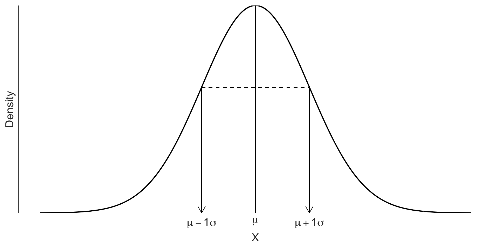
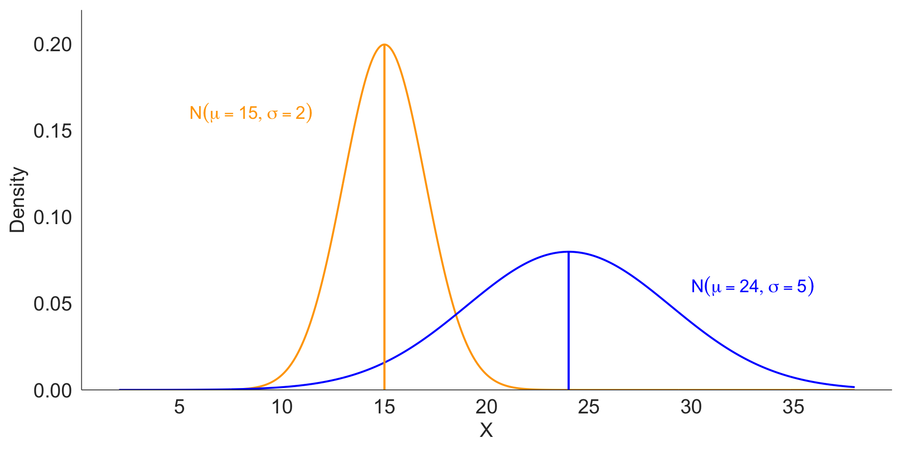
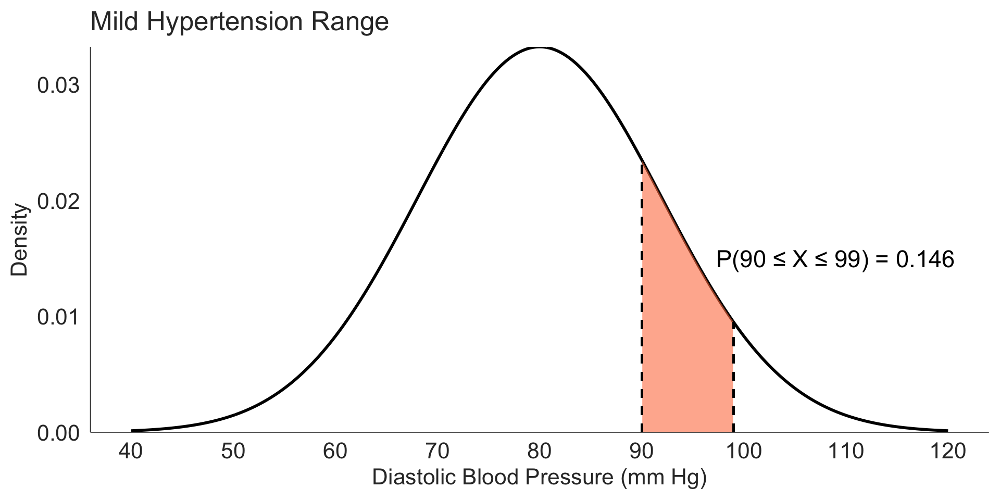
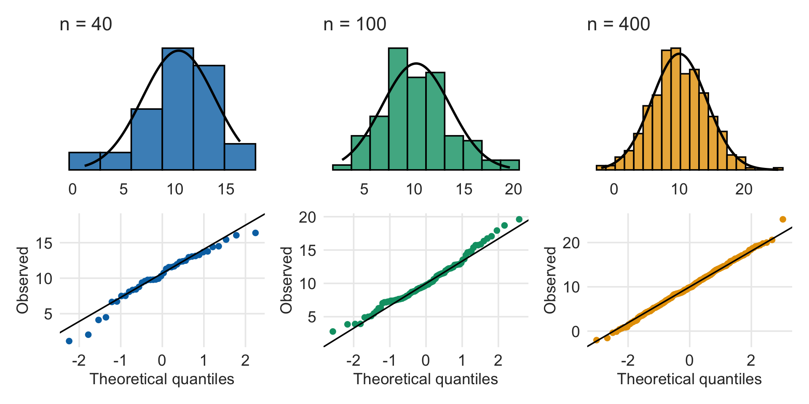

[1] 0.9750021Normal and Poisson Distributions
Textbook Sections 3.3–3.4
Emile Latour, Nicky Wakim, Meike Niederhausen
January 28, 2026
Learning Objectives
By the end of today’s lecture, you will be able to:
- Describe the characteristics of the Normal distribution
- Calculate and interpret Z-scores to standardize observations
- Use the Empirical Rule (68-95-99.7) to estimate probabilities
- Calculate probabilities using
pnorm()and find percentiles usingqnorm() - Apply the Normal approximation to the Binomial distribution
- Recognize when to use a Poisson distribution and calculate probabilities
Roadmap for Today
Part 1: Normal Distribution Basics
- Continuous distributions
- Normal parameters (μ, σ)
- Standard Normal distribution
Part 2: Z-scores & The Empirical Rule
- Standardization
- 68-95-99.7 rule
- Identifying unusual observations
Part 3: Calculating with R
pnorm()for probabilitiesqnorm()for percentiles- Real-world examples
Part 4: Normal Approximation
- When Binomial → Normal
- Conditions: \(np \geq 10\), \(n(1-p) \geq 10\)
- Continuity correction
Part 5: Poisson Distribution
- Modeling rare events
- Rate × time = λ
- Poisson approximation to Binomial
Part 6: Wrap-up
- Summary
- Next steps
Last time: Discrete vs. Continuous Random Variables
Discrete Random Variable
A discrete r.v. takes on:
- A finite number of values, OR
- A countably infinite number of values
Examples:
- Number of heads in 10 coin flips
- Number of students in a class
- Number of COVID cases per day
Continuous Random Variable
A continuous r.v. can take:
- Any real value in an interval
- Any value in a union of intervals
Examples:
- Height
- Blood pressure
- Time until an event occurs
Today’s focus: Continuous random variables
Continuous random variables
Continuous rv in general
- The distribution of a continuous rv is governed by a density function/curve.
- Probabilities are calculated as area under the curve over an interval.
- Total area beneath the density function/curve is 1.
Probability between a and b
The area beneath the density curve/function between two points a and b represents the probability that the random variable (\(X\), say) will assume some value between a and b
When working with continuous random variables, probability is found for intervals of values rather than individual values.
The probability that a continuous r.v. \(X\) takes on any single individual value is 0
That is, \(P(X = x) = 0\).
Thus, \(P(a < X < b)\) is equivalent to \(P(a \leq X \leq b)\)

Probability at exactly a
For a continuous random variable X:
- Probability comes from areas under the curve
- Areas require width
- A single point has no width
So:
- \(P(X = a) = 0\)
- Only intervals have non-zero probability (for example, \(P(a ≤ X ≤ b)\))
Intuition: you can shade an interval, but you can’t shade a point.
All the following are equivalent
For a continuous r.v. \(X\), all of the following are equivalent:
\[P(a \leq X \leq b) = P(a < X \leq b)\] \[= P(a \leq X < b) = P(a < X < b)\]
That is, we can safely ignore equality when defining the endpoints of a given interval. [This is certainly not true for discrete rv]
Normal distribution

Artwork by Allison Horst
Normal distribution
A random variable X is modeled with a normal distribution:
Shape: symmetric, unimodal bell curve
Center: mean \(\mu\)
Spread (variability): standard deviation \(\sigma\)
Shorthand for a random variable, \(X\), that has a Normal distribution: \[X \sim \text{Normal}(\mu, \sigma)\]
- Example: We recorded the high temperature in the past 100 years for today. The mean high is 19°C (66.2°F)
Anatomy of the Normal curve
The Normal distribution has a closed-form equation, but for this course:
- You do not need to memorize it
- You do not need to compute it by hand
- What matters is how \(\mu\) and \(\sigma\) shape the curve
Different means, Same SD

Same mean, Different SD

Different means, different SD
Z-scores & Standardization
Why standardize?
Different normal distributions have different scales:
- Heights measured in centimeters: \(X \sim N(170, 10)\)
- Test scores: \(Y \sim N(75, 8)\)
- Blood pressure: \(Z \sim N(120, 15)\)
Problem: How do we compare observations across different distributions?
Solution: Convert to a common scale using Z-scores
What is a Z-score?
The Z-score tells you how many standard deviations an observation is from the mean:
Suppose \(X\) is an arbitrary random variable that follows a normal distribution with mean \(\mu\) and standard deviation \(\sigma\), i.e. \(X \sim N(\mu, \sigma)\)
\[Z = \dfrac{X - \mu}{\sigma} \Longleftrightarrow X = \mu + Z\sigma\]
Notation:
- \(X\) = original observation
- \(\mu\) = mean of the distribution
- \(\sigma\) = standard deviation of the distribution
- \(Z\) = standardized score
Interpreting Z-scores
| Z-score | Interpretation |
|---|---|
| \(Z = 0\) | Exactly at the mean |
| \(Z = 1\) | One SD above the mean |
| \(Z = -1\) | One SD below the mean |
| \(Z = 2.5\) | 2.5 SDs above the mean |
| \(Z = -1.8\) | 1.8 SDs below the mean |
Rule of thumb:
- Z-scores between -2 and 2 are common
- Z-scores beyond ±3 are rare (unusual observations)
Example: Height standardization
Suppose adult male heights follow \(N(\mu = 175, \sigma = 7)\) cm.
Question: What is the Z-score for a man who is 189 cm tall?
\[Z = \frac{X - \mu}{\sigma} = \frac{189 - 175}{7} = \frac{14}{7} = 2\]
Interpretation: This man is 2 standard deviations above the mean height.
Standard Normal Distribution
When we standardize a normal random variable, we get the Standard Normal distribution:
\[Z \sim N(\mu = 0, \sigma = 1)\]
Properties:
- Mean = 0
- Standard deviation = 1
- Denoted by \(Z\)
- All normal distributions can be converted to this standard form

The Empirical Rule
The 68-95-99.7 Rule
For any normal distribution:
- 68% of observations fall within 1 SD of the mean
- 95% of observations fall within 2 SDs of the mean
- 99.7% of observations fall within 3 SDs of the mean
Empirical rule (68–95–99.7).
Source: OpenIntro Biostatistics.
Using the Empirical Rule
Example: IQ scores follow \(N(\mu = 100, \sigma = 15)\)
Questions:
- What percentage of people have IQ between 85 and 115?
- 85 = 100 - 15 = μ - σ
- 115 = 100 + 15 = μ + σ
- Answer: About 68%. So about 2/3 of people fall within 15 points of 100.
- What percentage have IQ between 70 and 130?
- 70 = 100 - 30 = μ - 2σ
- 130 = 100 + 30 = μ + 2σ
- Answer: About 95%
Why is the Empirical Rule useful?
- Quick estimates without calculations
- Identify unusual observations
- Values beyond 2 SDs are uncommon (<5%)
- Values beyond 3 SDs are very rare (<0.3%)
- Check data quality
- If your data doesn’t follow this pattern, it may not be normally distributed
Calculating Probabilities with R
Calculating probabilities from a Normal distribution
There are several ways to calculate probabilities from a normal distribution:
Calculus
(not for us!)Normal probability tables
- Included in the textbook (Appendix B.1)
- Helpful historically, but not required for this course
R commands (what we will use)
- \(P(Z \leq q) =\)
pnorm(q, mean = 0, sd = 1) - \(P(Z > q) =\)
pnorm(q, mean = 0, sd = 1, lower.tail = FALSE)
- \(P(Z \leq q) =\)
In this course, we will calculate normal probabilities using R.
R functions for the Normal distribution
Four key functions
| Function | Purpose | Example |
|---|---|---|
dnorm() |
Density at a point | Height of curve at x |
pnorm() |
Cumulative probability | P(X ≤ x) |
qnorm() |
Quantile/percentile | What x gives P(X ≤ x) = p? |
rnorm() |
Random samples | Generate random normal data |
Most common: pnorm() and qnorm()
pnorm(): Cumulative probabilities
pnorm(q, mean, sd, lower.tail = TRUE)
Cumulative probability is the total area under the curve to the left of a value, i.e. the probability that a random variable is less than or equal to a value: \(P(X \le q)\).
q= the value you’re interested inmean\(= \mu\)sd\(= \sigma\)lower.tail = TRUE\(\longrightarrow P(X \le q)\)lower.tail = FALSE\(\longrightarrow P(X \gt q)\)
Example: For standard normal \(Z \sim N(0, 1)\):
Interpretation: About 97.5% of observations fall below Z = 1.96
Example: Standard normal probabilities
Let \(Z \sim N(0, 1)\). Calculate:
1. \(P(Z < 2.67)\)
Example: Standard normal probabilities (continued)
3. \(P(-2.18 < Z < 2.46)\)
Example: General normal distribution
Suppose the distribution of diastolic blood pressure (DBP) in 35- to 44-year old men is normally distributed with mean 80 mm Hg and variance 144 mm Hg.
\[X \sim N(\mu = 80, \sigma = 12)\]
(Note: \(variance = 144\), so \(SD = \sqrt{144} = 12\))
Question 1: What proportion has mild hypertension (DBP between 90 and 99)?
Visualizing the probability
Same probability, different scale
Recall the Z-score transformation:
\[ Z = \frac{X - \mu}{\sigma} \]
This means any probability from a normal distribution can be computed in two equivalent ways:
- These two probabilities are identical.
- Standardization changes the scale, not the probability.
Finding Percentiles
qnorm(): Finding percentiles
qnorm(p, mean, sd, lower.tail = TRUE)
A percentile is the value below which a given percentage of observations fall;
qnorm() returns the value on the x-axis corresponding to a cumulative probability.
p= the probability/percentile (as a decimal)mean= μsd= σ- Returns the value where \(P(X ≤ value) = p\)
Example: Blood pressure percentiles
DBP: \(X \sim N(80, 12)\)
Question 2: What is the 10th percentile?
10% of men have DBP below about 64.6 mm Hg.
Connecting percentiles to Z-scores
Any percentile question can be solved with Z-scores:
What is the 10th percentile of N(80, 12)?
Step 1: Find Z-score for 10th percentile
Step 2: Convert back to original scale
Formula: \(X = \mu + Z \cdot \sigma\)
Normal Approximation to Binomial
When is a binomial approximately normal?
Recall that a binomial random variable \(X\) counts the total number of successes in \(n\) independent trials, each with probability \(p\) of a success.
Probability function for \(k = 0, 1, ..., n\) : \[P(X = k) = {n\choose k}p^k(1-p)^{n-k}\]
As n gets larger, the binomial distribution becomes more symmetric and can be approximated by a normal distribution.
Note
Rule of thumb: Normal approximation works well when:
\[np \geq 10 \quad \text{and} \quad n(1-p) \geq 10\]
- Ensures sample size (\(n\)) is moderately large and the \(p\) is not too close to 0 or 1
- Other resources use other criteria (like \(npq>5\) or \(np>5\))
Visual: Binomial approaching Normal
Binomial distributions for different \(n\) (columns) and \(p\) (rows)

Normal approximation parameters
If \(X \sim \text{Binomial}(n, p)\) and the conditions are met:
\[X \approx N(\mu, \sigma)\]
where:
\[\mu = np \quad \text{and} \quad \sigma = \sqrt{np(1-p)}\]
These are the same formulas for the mean and SD of a binomial distribution!
Continuity correction
The binomial is discrete (0, 1, 2, …), but the Normal is continuous.
So we “nudge” the cutoff by 0.5 when using the Normal approximation.
- For left-tail probabilities (\(<\) or \(\le\)): add 0.5
- \(P(X \le k)\) becomes \(P(Y \le k + 0.5)\)
- \(P(X < k)\) becomes \(P(Y \le k - 0.5)\) (since \(X < k\) means \(X \le k-1\))
- For right-tail probabilities (\(>\) or \(\ge\)): subtract 0.5
- \(P(X \ge k)\) becomes \(P(Y \ge k - 0.5)\)
- \(P(X > k)\) becomes \(P(Y \ge k + 0.5)\) (since \(X > k\) means \(X \ge k+1\))
Where \(X\) is binomial, and \(Y\) is the Normal approximation.
Example: COVID vaccination status
About 25% of people that test positive for Covid-19 are vaccinated for it. Suppose 100 people have tested positive for Covid-19 (independently of each other). Let \(X\) denote the number of people that are vaccinated among the 100 that tested positive. What is the probability that fewer than 20 of the people that tested positive are vaccinated?
Let \(X\) = number vaccinated among the 100.
Question: What is \(P(X < 20)\)?
Exact vs. Approximate probability (1/2)
Method 1: Exact (Binomial)
\[P(X < 20) = P(X \leq 19) = P(X=0) + P(X=1) + \cdots + P(X=19)\]
Method 2: Normal Approximation
Very close! The normal approximation is 0.083 vs. exact 0.100.
Exact vs. Approximate probability (2/2)
Method 3: Normal Approximation with continuity correction
Because we want \(P(X < 20) = P(X \le 19)\), we use 19.5 in the normal approximation.
With continuity correction: 0.102
What’s really happening?
- A binomial counts the number of successes
- When n is large, this count behaves like a normal variable
- The normal approximation lets us:
- Use Z-scores
- Use
pnorm() - Reuse everything we just learned
When to use each method?
Use Binomial (exact):
- When n is small or moderate
- When you need exact probabilities
- R handles this easily with
pbinom()
Use Normal approximation:
- When n is very large (computing binomial probabilities becomes slow)
- For theoretical understanding
- Historically important (before computers!)
In practice: With modern computers, we usually just use the exact binomial.
Checking whether Normal is reasonable (1/2)
In practice, we check normality visually:
- Histogram or density plot (shape: roughly symmetric, unimodal)
- Q-Q plot (points close to a straight line)
- If using a normal model: check residuals, not raw outcomes
We usually avoid hypothesis tests (e.g., Shapiro-Wilk) because:
- With large n, tiny deviations look “significant”
- With small n, tests have low power
- Visuals + context are more informative
Checking whether Normal is reasonable (2/2)
A Q-Q plot compares your sample quantiles to theoretical Normal quantiles; straight-line agreement means the distributional shape matches Normal (especially in the tails).
Poisson Distribution
Poisson distribution (counts)
Use a Poisson model for the number of events in a fixed interval when:
- Events occur independently
- The event rate is roughly constant over the interval
- We are counting events (0, 1, 2, …)
Notation:
\[X \sim \text{Pois}(\lambda)\]
Interpretation:
- \(\lambda\) = expected number of events per interval (rate × time)
- Mean = \(\lambda\)
- SD = \(\sqrt{\lambda}\)
Poisson distribution: when you see it, think Poisson
Note
Poisson models counts of events in a fixed interval.
Ask yourself:
“How many times does something happen in a given amount of time or space?”
Common examples:
- Number of ER arrivals per hour
- Number of emails received per day
- Number of mutations per gene
- Number of accidents per mile of highway per year
Key clues:
- Counting events: 0, 1, 2, 3, …
- Fixed interval (time, distance, area)
- Events are relatively rare and independent
R functions for Poisson
Four key functions
| Function | Purpose | Example |
|---|---|---|
dpois() |
Probability at a value | P(X = x) |
ppois() |
Cumulative probability | P(X ≤ x) |
qpois() |
Quantile | What x gives P(X ≤ x) = p? |
rpois() |
Random samples | Simulate counts |
Most common: dpois() and ppois()
Shape depends on λ

As λ increases:
- The distribution shifts to the right (larger expected counts)
- The distribution becomes more symmetric
- For large λ, it starts to look approximately Normal
Example: Typhoid deaths (λ scaling)
Suppose there are on average 5 deaths per year.
1. Probability of exactly 3 deaths in 1 year:
2. Probability of exactly 2 deaths in 0.5 years:
Rate scales with time, so \(\lambda_{0.5} = 5 \times 0.5 = 2.5\)
3. Probability of more than 12 deaths in 2 years:
\(\lambda_{2} = 5 \times 2 = 10\)
Poisson approximation to Binomial (rare events)
When \(n\) is large and \(p\) is small, a Binomial can be approximated by a Poisson:
If \(X \sim \text{Binomial}(n, p)\) and \(p\) is small, then \[X \approx \text{Pois}(\lambda = np)\]
This is most useful when the Normal approximation is not appropriate (because \(p\) is too close to 0).
Quick example:
[1] 0.8573042[1] 0.8571235Very close! (0.857 vs 0.857)
Summary: Poisson distribution
Key characteristics:
- Models count data for rare events
- Parameter: \(\lambda\) = rate × time
- Mean = \(\lambda\), SD = \(\sqrt{\lambda}\)
R functions:
dpois(x, lambda)→ P(X = x)ppois(q, lambda)→ P(X ≤ q)
Important: Remember to adjust λ when changing the time interval!
Approximation: Can approximate Binomial when n is large and p is small.
Summary & Next Steps
What you need to know: Normal distribution
Conceptual understanding:
- Normal distributions are symmetric, bell-shaped, continuous
- Fully characterized by mean (μ) and standard deviation (σ)
- Z-scores standardize to N(0, 1): \(Z = \frac{X - \mu}{\sigma}\)
Empirical Rule (68-95-99.7):
- 68% of data within 1 SD, 95% within 2 SDs, 99.7% within 3 SDs
- Values beyond ±3 SDs are very rare
R skills:
pnorm(q, mean, sd)→ P(X ≤ q)qnorm(p, mean, sd)→ value at pth percentile- Normal approximation when \(np \geq 10\) AND \(n(1-p) \geq 10\)
What you need to know: Poisson distribution
When to use Poisson:
- Counting rare events in a fixed interval
- Events occur independently at rate λ
Key concepts:
- Parameter: λ = rate × time
- Mean = λ, SD = \(\sqrt{\lambda}\)
- Adjust λ when changing time intervals
R skills:
dpois(x, lambda)→ P(X = x)ppois(q, lambda)→ P(X ≤ q)- Poisson approximates Binomial when n is large and p is small
Key formulas (for reference)
You don’t need to memorize these, but understand what they represent:
Z-score transformation: \[Z = \frac{X - \mu}{\sigma} \quad \text{or} \quad X = \mu + Z\sigma\]
Normal approximation to Binomial:
When \(np \geq 10\) and \(n(1-p) \geq 10\): \[X \sim \text{Binomial}(n, p) \approx N\left(\mu = np, \sigma = \sqrt{np(1-p)}\right)\]
Poisson approximation to Binomial:
When \(n\) is large and \(p\) is small: \[X \sim \text{Binomial}(n, p) \approx \text{Pois}(\lambda = np)\]
BMSC 620 | Normal + Poisson